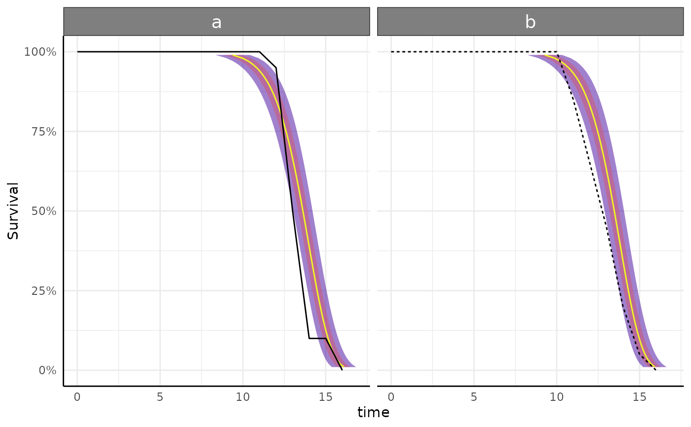
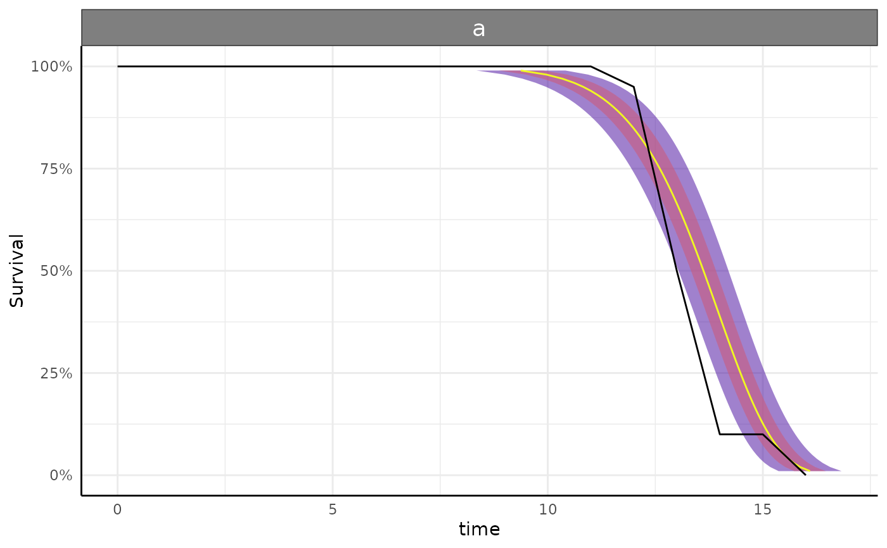
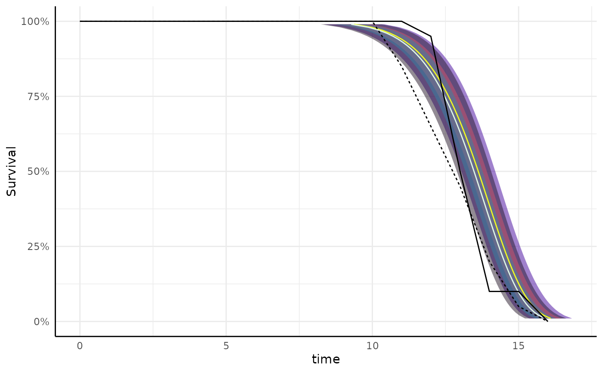

Function to visualize survival::survreg models fit by fitGrowth.
Source: R/survPlot.R
survregPlot.RdModels fit using growthSS inputs by fitGrowth
(and similar models made through other means) can be visualized easily using this function.
This will generally be called by growthPlot.
Usage
survregPlot(
fit,
form,
groups = NULL,
df = NULL,
timeRange = NULL,
facetGroups = TRUE,
groupFill = FALSE,
virMaps = c("plasma")
)Arguments
- fit
A model fit returned by
fitGrowthwith type="nls".- form
A formula similar to that in
growthSSinputs (or thepcvrFormpart of the output) specifying the outcome, predictor, and grouping structure of the data asoutcome ~ predictor|individual/group. If the individual and group are specified then the observed growth lines are plotted.- groups
An optional set of groups to keep in the plot. Defaults to NULL in which case all groups in the model are plotted.
- df
A dataframe to use in plotting observed growth curves on top of the model. This must be supplied for nls models.
- timeRange
Ignored, included for compatibility with other plotting functions.
- facetGroups
logical, should groups be separated in facets? Defaults to TRUE.
- groupFill
logical, should groups have different colors? Defaults to FALSE. If TRUE then viridis colormaps are used in the order of virMaps
- virMaps
order of viridis maps to use. Will be recycled to necessary length. Defaults to "plasma", but will generally be informed by growthPlot's default.
Examples
df <- growthSim("logistic",
n = 20, t = 25,
params = list("A" = c(200, 160), "B" = c(13, 11), "C" = c(3, 3.5))
)
ss <- growthSS(
model = "survival weibull", form = y > 100 ~ time | id / group,
df = df, type = "survreg"
)
fit <- fitGrowth(ss)
survregPlot(fit, form = ss$pcvrForm, df = ss$df)

survregPlot(fit, form = ss$pcvrForm, df = ss$df, groups = "a")

survregPlot(fit,
form = ss$pcvrForm, df = ss$df, facetGroups = FALSE,
groupFill = TRUE, virMaps = c("plasma", "mako")
)
